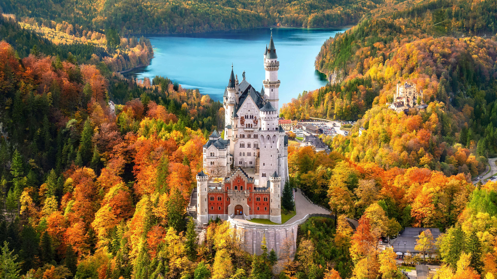
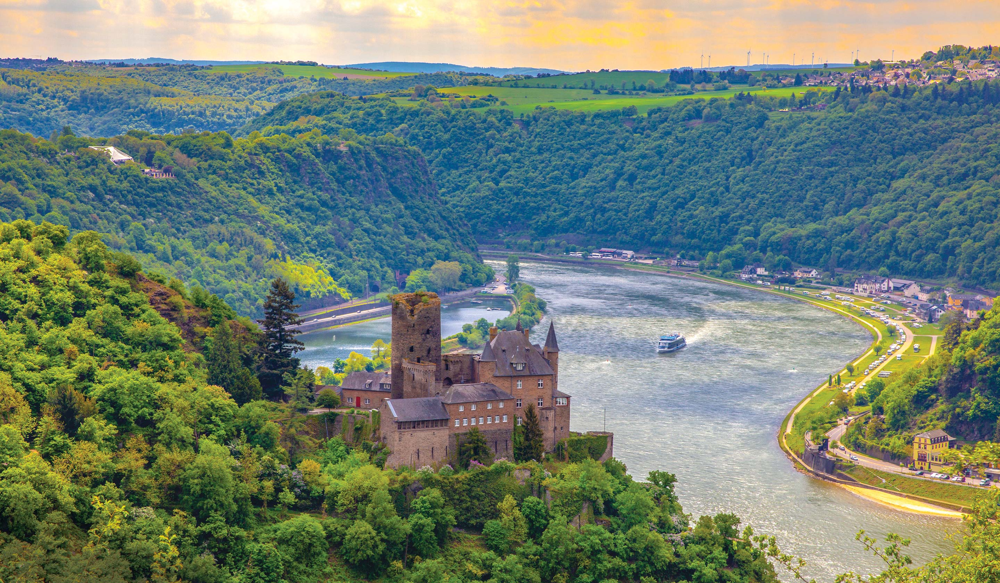
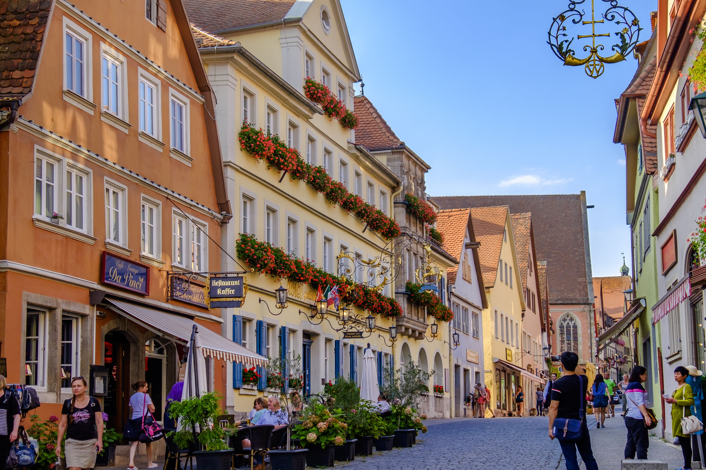
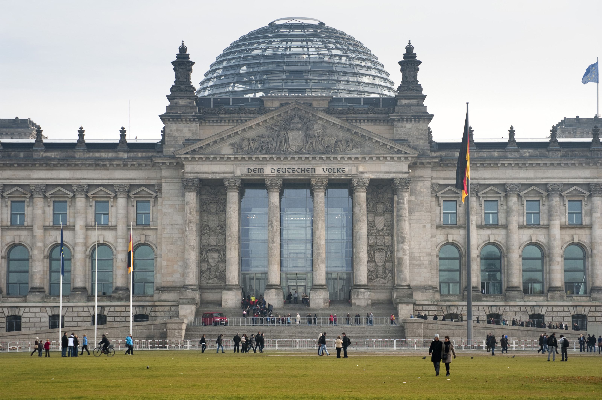
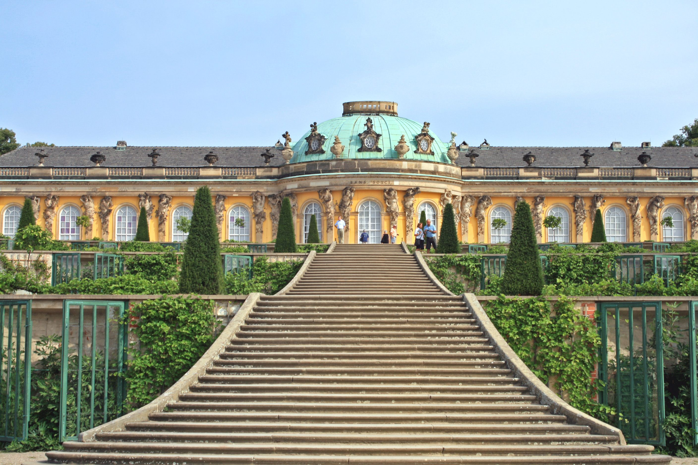
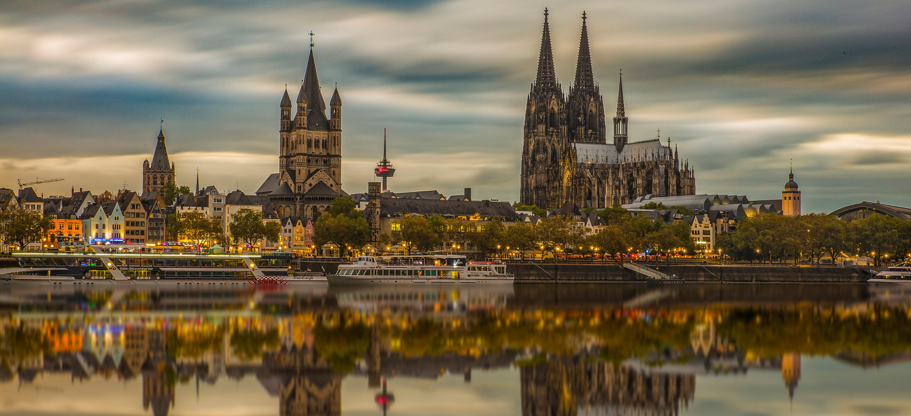
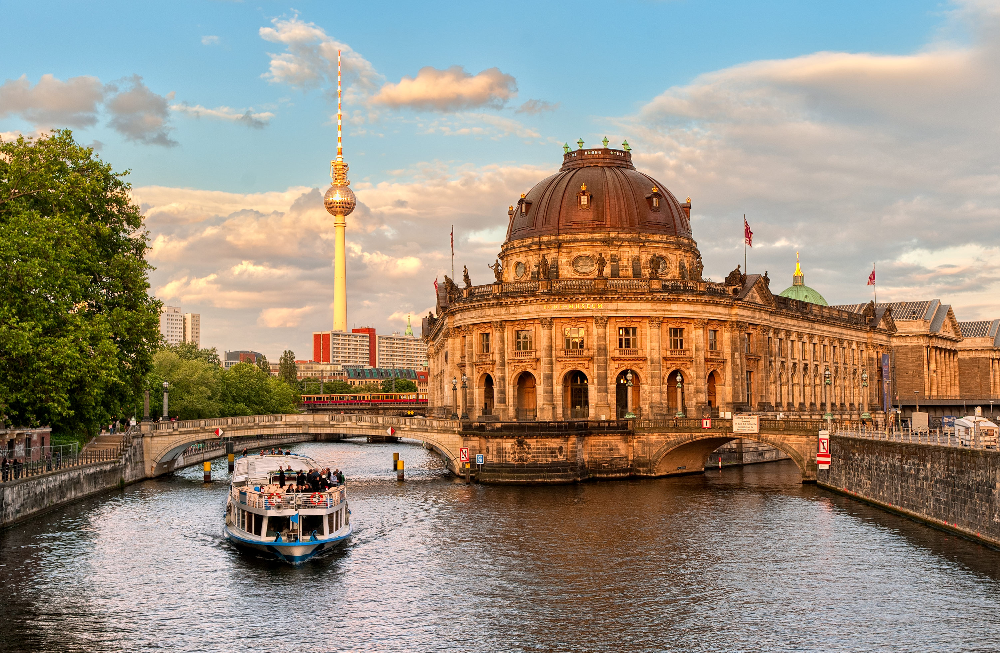
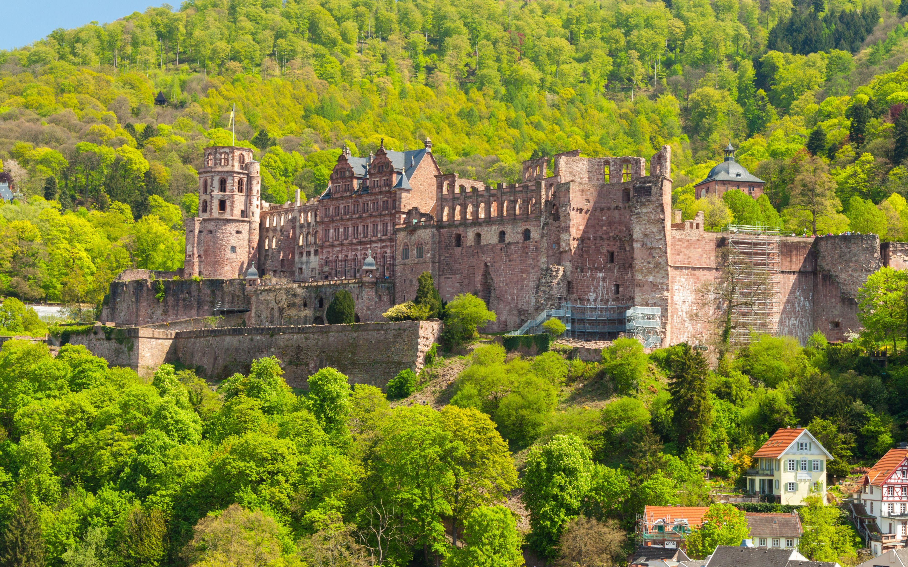

Highlights
Popular Destinations









Germany reveals its character through contrasts both subtle and striking. Ancient castles rise above rivers that have carried trade and tales for centuries, while modern architecture gleams with precision and purpose. It is a land where craftsmanship and creativity share equal importance, where each region carries its own rhythm shaped by tradition and innovation alike.
Think of sunlight catching the stained glass of a Gothic cathedral, or the sound of footsteps echoing through a cobblestone square at dawn. Smell the roasted chestnuts in a winter market, hear music spilling from a concert hall, and feel the calm of forests that seem to stretch without end.
Strength and grace exist side by side in this land of forests, rivers, and timeless craft. Mornings begin with the scent of fresh bread from a village bakery, while evenings settle into the steady rhythm of music, conversation, and light spilling through old windows.
Each experience deepens your understanding of what makes this place unique. You may find yourself tracing the stone walls of a medieval castle, listening to symphonies that echo through grand halls, or walking paths that wind between vineyards and valleys.
With time, the country reveals itself in ways that words cannot fully capture. You might walk through forests where the only sound is the rustle of leaves, or stand before cathedrals whose arches hold centuries of memory. What you take with you is not just remembrance, but a calm respect for a place that values depth over display.
Explore open-air markets and traditional workshops filled with handcrafted goods, from intricate wood carvings and porcelain to leather goods and regional textiles.
Experience the heart of German cuisine through comforting dishes like roasted meats, fresh-baked pretzels, and seasonal vegetables served with rich gravies.
Start your day with strong coffee and a fresh pastry, then raise a glass of Riesling or locally brewed beer as evening falls.
Travel throughout Germany with ease by high-speed train, regional connections, or short domestic flights. Scenic routes pass through mountain ranges, river valleys, and forested countryside.
Efficient public transportation systems, taxis, and rental bikes make urban travel simple and accessible. Walking through old quarters, market squares, and riverside promenades offers the most authentic glimpse of daily life.
Step beyond the cities to explore Germany's quieter landscapes. Journey through the vineyard-lined Moselle Valley, hike along the trails of the Black Forest, or visit fairy-tale castles tucked into rolling hills.
Central European Time (CET), which is GMT+1, and observes daylight saving time from late March to late October.
Uber, Bolt, and Free Now operate in many major cities, offering reliable and convenient transportation options. Taxis are widely available and advisable to book through official apps.
Germany uses 230V electricity with a frequency of 50Hz. Outlets typically support plug types C and F, so visitors from other regions may need a universal adapter.
Germany experiences four distinct seasons, with warm summers, crisp autumns, cold winters, and mild springs. The southern regions see more sunshine while the north enjoys cooler breezes.
Germany's landscapes and cities have served as the backdrop for films such as Inglourious Basterds, The Reader, and Run Lola Run. The country has produced influential figures like filmmaker Wim Wenders, composer Hans Zimmer, and actress Diane Kruger.
Emergency Services: 112
Police: 110
Medical Emergency: 112
Fire Brigade: 112
Country Code: +49







